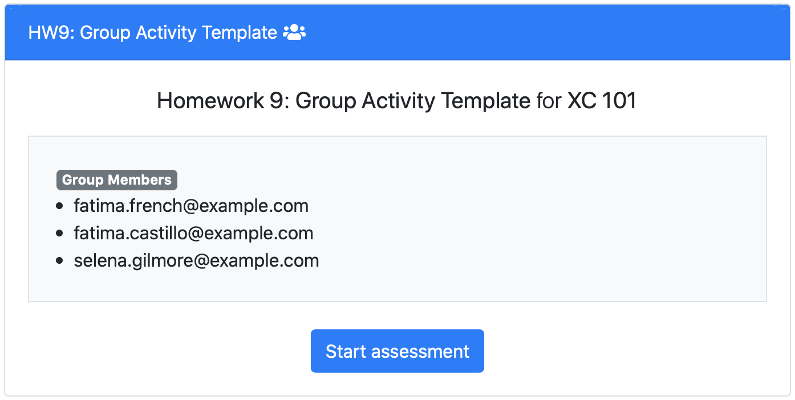
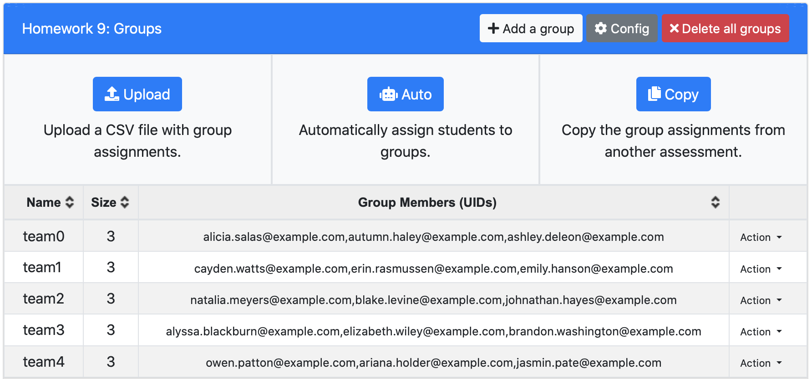

Thanks to a huge development effort led by Frankie Yuan and Zhining Qiu PrairieLearn now supports group assessments. This lets students collaboratively work on an assessment together, with everyone in the group submitting answers to the same questions and everyone receiving the same shared scores.
There is a flexible group assignment system that allows instructors to either assign students to groups (via CSV upload or randomly generated by PrairieLearn) or let students make their own groups.
This new group assessment feature is ideal for discussion sections or labs where students are expected to work together on a sequence of problems. Groups are also good for in-class collaborative activities.
To get started with making a group assessment, see the documentation.
Code and testing for this feature was also contributed by Yipeng Han, David Mitchell, Nicolas Nytko, Kevin Tu, Nathan Walters, and Tim Yang. The project design and coordination was led by Abdu Alawini, Geoffrey Herman, and Mariana Silva.